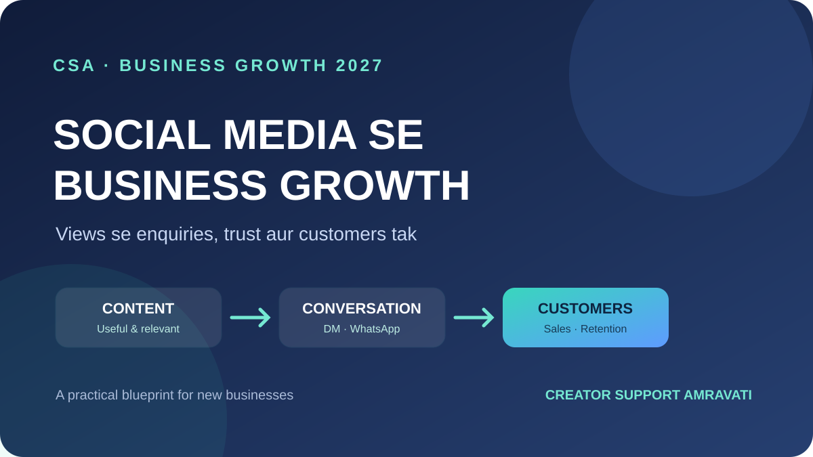
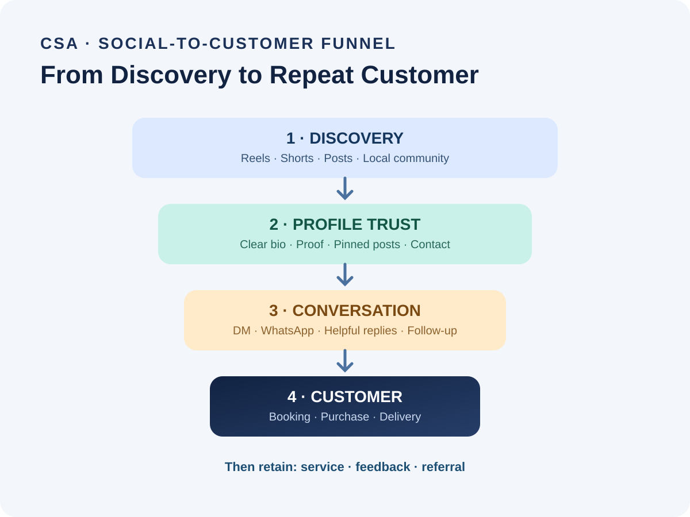

Social Media Ka Use Karke Naye Business Ko Kaise Grow Karein? Complete Deep-Dive Blueprint
Ek naya business shuru karte waqt sabse bada sawal hota hai: logon ko hamare baare mein kaise pata chale, aur kam budget mein pehle trust aur customers kaise banayein? Instagram, YouTube, Facebook aur WhatsApp visibility aur conversation ke useful channels ho sakte hain. Lekin sirf product photo post karna ya roz random Reel banana business growth strategy nahi hai.
Bahut se founders ko likes aur views milte hain, lekin real enquiries, calls, bookings ya sales nahi aati. Asli farq tab padta hai jab social media ko ek complete customer journey ki tarah chalaya jata hai—discovery, trust, conversation, conversion aur repeat relationship.

- Naye business ke liye social media ka role: views vs. revenue
- Sahi platform selection
- Business profile optimization
- 4-pillar content system
- Social-to-DM / WhatsApp / website conversion funnel
- Organic reach aur targeted paid boost
- Common mistakes aur FAQs
1. Naye Business Ke Liye Social Media Ka Asli Role: Views vs. Revenue
Naye business ke liye social media ka pehla kaam instant viral hona nahi, balki familiarity aur credibility build karna hai. Jab koi customer aapka naam pehli baar sunta hai—dost se, local market mein ya kisi ad/post se—toh woh aksar profile check karta hai.
Wahan woh chaar basic cheezein dekh sakta hai:
- Clarity: Yeh business kya karta hai aur kis problem ko solve karta hai?
- Authenticity: Kya iske peeche real log, real work aur genuine process hai?
- Relevance: Kya page par meri need se judi useful information milti hai?
- Next step: Agar mujhe poochhna ya kharidna ho, toh contact kaise karoon?
Views awareness ka signal ho sakte hain, lekin business performance samajhne ke liye qualified enquiries, calls, bookings, paid orders, conversion rate, repeat customers aur contribution margin bhi track karein. Social media post ka result business type, offer, audience aur response process par depend karega; views se sales guaranteed nahi hoti.
2. Step 1: Platform Selection — Har Jagah Bhagne Ke Bajay Sahi Channel Chunein
Naye business mein waqt aur resources limited hote hain. Ek saath chhe platforms par aadha-adhoora kaam karne ke bajay ek primary discovery platform aur ek direct conversation channel se shuru karein.
- Instagram: Visual products, local services, studios, coaching, lifestyle brands, Reels aur carousels ke liye useful discovery channel.
- YouTube: Detailed explanations, tutorials, comparisons, coaching/education, reviews aur long-form authority ke liye useful.
- Facebook: Local community groups, regional audiences, events aur broad demographic reach ke liye useful ho sakta hai.
- WhatsApp Business: Enquiries ko handle karne, catalogue/details bhejne, follow-up aur repeat customer communication ke liye direct bridge.
Platform wahi chunein jahan aapke target customers active hon aur jahan aap consistently quality content bana sakein. Example: local salon Instagram par visual work dikha sakta hai aur WhatsApp par appointments handle kar sakta hai; coaching institute YouTube par detailed lessons aur WhatsApp par enquiry follow-up kar sakta hai.
3. Step 2: Business Profile Optimization — Scroll Se Inquiry Tak Ka Rasta
Viewer profile par aata hai toh uske liye kuch seconds mein business samajhna aur next step lena easy hona chahiye.
A. Clear Positioning & Keyword Name
Profile name ya description mein brand ke saath business category ya main value clear rakhein. Search keywords ko natural tareeke se use karein; irrelevant keyword stuffing avoid karein.
B. Crisp Bio: What + Who + Action
- Aap kya offer karte hain aur kiske liye?
- Location, service area ya main specialty kya hai?
- Customer ka next step kya hai—DM, WhatsApp, website ya booking link?
C. Pinned Posts Aur Highlights
Top pinned posts ko customer journey ke hisaab se arrange karein:
- Business introduction & core offer: Aap kya karte hain aur kis tarah help karte hain.
- Real process / proof: Actual work, process, quality standards ya customer-approved case example.
- Common questions / how to start: Pricing approach, booking process, timings aur enquiry ka next step.
Highlights mein services/products, FAQs, location, testimonials (permission ke saath), process aur contact details rakhein. Profile par sirf wahi claims aur results dikhayein jinke liye aapke paas evidence ho.
4. Step 3: The 4-Pillar Content System Jo Trust Aur Sales Banata Hai
Har post ko sales poster banana zaroori nahi. Naye business ke content calendar mein in chaar pillars ka balanced mix rakhein:
Pillar 1: Problem & Mistake Content — Attention & Relevance
Customer ki daily problem, confusion ya buyer mistake ko address karein. Example: “Service chunte waqt ye 3 cheezein check karein, taaki baad mein regret na ho.”
Pillar 2: Process & Behind-The-Scenes — Trust & Transparency
Kaam kaise hota hai, quality check kaise hota hai, team/setup kaisa hai aur delivery ke pehle kya steps follow hote hain—ye genuine process dikhayein. Private customer data ya confidential details expose na karein.
Pillar 3: Education & Value — Authority & Saves
Niche ke practical tips, checklists, comparisons aur myths explain karein. Content ko genuinely useful banayein; sirf engagement bait ya exaggerated claims se bachein.
Pillar 4: Offer, Case Proof & Clear CTA — Conversion
Relevant educational/process content ke saath apna offer, deliverables, actual work sample ya service breakdown share karein. Viewer ko exact next action batayein. Case proof real, permission-based aur context ke saath hona chahiye.
| Content pillar | Example format | Customer ka possible next step |
|---|---|---|
| Problem & mistakes | Short Reel, FAQ carousel | Save, share, question |
| Process & behind-the-scenes | Story, process video | Profile visit, trust |
| Education & value | Tutorial, checklist, comparison | Save, follow, read guide |
| Offer & proof | Service explainer, case study | DM, call, booking |
5. Step 4: Social-To-Customer Conversion Funnel — DM, WhatsApp Aur Website
Sirf “Like aur Share” sales nahi laate. Content se customer tak jaane ka rasta smooth aur friction-free banayein:
- Specific CTA dein: Generic “link in bio” ke bajay relevant action likhein—“Requirement aur quote ke liye ‘INFO’ DM karein” ya “Appointment ke liye WhatsApp par message karein”.
- Fast aur helpful reply: Pehle customer ki need samjhein. Zaroorat ho toh 1–2 short questions poochhein, phir suitable option, price/details aur next step clear karein.
- Lead ko track karein: Enquiry source, date, requirement, status aur next follow-up ko simple spreadsheet/CRM mein record karein. Sensitive details ko secure rakhein.
- Website aur local listing se jodein: Relevant service page, portfolio, FAQ, booking/contact page aur local Google Business Profile par accurate information dein.
- Polite follow-up karein: Customer ki preference aur consent ka respect karte hue relevant follow-up bhejein; repeated unwanted messages na karein.

6. Step 5: Organic Reach + Targeted Paid Boost Ka Smart Combination
Organic content brand voice aur trust build karne mein madad karta hai. Paid promotion relevant audience tak reach badha sakta hai, lekin ad tabhi chalayein jab offer aur response process ready ho.
- Pehle organic validation: Dekhein kaun sa topic, hook, creative ya offer genuine questions aur qualified interest la raha hai.
- Focused audience & location: Naye local business ko pehle relevant service area, customer segment aur need par focus karna chahiye; broad targeting se budget waste ho sakta hai.
- Landing / DM readiness: Ad se pehle WhatsApp, DM, form ya website page test karein. Phone, timings, offer details aur response process correct hon.
- Small controlled tests: Ek waqt mein limited variables test karein—creative, audience ya CTA. Spend limit aur success metric pehle define karein.
- Business result measure karein: Reach/CTR ke saath qualified leads, cost per lead, paid conversions, customer acquisition cost aur margin dekhein. Cheap clicks ka matlab profitable customers nahi.
Paid ads ki performance guarantee nahi hoti. Campaign ko tab scale karein jab tracking reliable ho, lead quality samajh aa rahi ho aur fulfilment capacity available ho.
7. Sirf Posting vs. Business-Focused Social Strategy
| Aspect | Casual / Just Posting | Business Growth System (2027) |
|---|---|---|
| Content goal | Sirf likes, views ya trend follow karna | Trust banana, doubts hatana aur relevant enquiries lana |
| Message tone | Generic “sab kuch milta hai / best quality” | Specific problem, clear process aur real value |
| Lead handling | DMs/comments late ya bina follow-up | Helpful conversation aur clear next step |
| Ecosystem | Sirf ek social feed par depend | Reels/video + WhatsApp/DM + website/local trust |
8. Naye Business Owners Ki 6 Badi Galtiyan Jinse Bachna Zaroori Hai
- Har post ko sales poster bana dena: Jab har post mein sirf kharidne ki appeal hoti hai, audience ko useful context nahi milta. Education aur clarity bhi dein.
- Audio aur readability ignore karna: Noisy audio, chhota text aur cluttered visuals viewer ko content samajhne se rok sakte hain.
- Ek hafte mein result na aane par band kar dena: Consistent testing aur improvement ke liye time dein; 60–90 din ko guaranteed result nahi, learning window samjhein.
- Fake followers ya bots kharidna: Fake numbers real customers nahi laate aur performance analysis ko misleading bana dete hain.
- Har roz topic aur style badalna: Core audience aur positioning clear rakhein; formats test karein par brand promise coherent rakhein.
- Follow-up na karna: Interested prospects ko polite, timely aur relevant response dein; consent aur opt-out preferences ka respect karein.
Frequently Asked Questions
1. Naye business ke liye social media se pehle inquiries ya sales aane mein kitna samay lagta hai?
Yeh offer clarity, niche aur outreach/content consistency par nirbhar karta hai. Direct outreach, local relevance aur clear CTAs ke saath kuch hafton mein shuruati inquiries mil sakti hain, jabki steady organic trust aur repeat flow aam taur par 2 se 4 mahine mein banta hai. Yeh estimate hai, guarantee nahi.
2. Kya naye business ke liye paid ads zaroori hain ya sirf organic se bhi kaam chal sakta hai?
Shuruat mein organic content aur warm outreach se budget bachakar offer aur messaging test karna useful hai. Jab aapka offer aur response flow proven ho jaye, tab targeted ads se reach badhayein.
3. Hafte mein kitni posts ya Reels dalna practical hai?
Quality aur clarity sabse zaroori hain. Hafte mein 3 se 5 focused Reels/posts, regular Stories aur timely DM/WhatsApp response ek practical starting schedule ho sakta hai. Apne resources, niche aur audience response ke hisaab se cadence adjust karein.
4. Kya naye business ko social media ke saath website bhi banani chahiye?
Social media discovery aur engagement ke liye useful hai, jabki website aapka owned information hub ban sakti hai jahan details, guides, tools aur search visibility long-term mein kaam aati hai.
Useful Tools & CSA Resources
- Free YouTube & Instagram Packaging Kit: Business Reels, videos aur social posts ke hooks, captions aur hashtags ke liye Creator Packaging Kit dekhein.
- Video/Reels Production, Design & Web Services: Business Reels, creatives, SEO aur website setup ke liye CSA Services dekhein.
- Social Media & Business Growth Consultation: Apne business ke social media aur content funnel ke liye Creator Support Amravati se sampark karein.
Suggested & Related Articles
- Naye Business Ko Grow Kaise Karein? Complete Practical Growth Blueprint (2027 Guide) — Offer clarity, local trust, customer retention aur cash-flow basics.
- Instagram Par Organic Followers Kaise Badhayein? Complete Discovery-To-Follow Blueprint — Profile optimization, Reels, carousels aur Insights.
- Website Kyun Zaroori Hai Jab Aapke Paas Instagram Aur YouTube Hai? — Social media reach ke saath owned website ka role.
- Ek Video Se 10 Content Pieces Kaise Banayein? — Ek shoot se multiple content formats ka workflow.
Helpful Official Guidelines & References
- Instagram for Business: Official business resources
- Instagram Creators: Official creator resources
- Google Search Central: Creating Helpful, Reliable, People-First Content
About the Author
Rajkumar Chavhan ek digital marketing specialist (8+ years experience) aur Creator Support Amravati (CSA) ke founder hain. Woh social media strategy, video/Reels production, graphic design, SEO, web development aur studio production ke zariye naye businesses, local brands, educators aur creators ko grow karne mein madad karte hain.
- Website & Free Creator Tools: creatorsupportamravati.in
- Studio & Office: Vyanktesh Complex, Shop No. F-101, Mahendra Colony, Naredi Nagar Road, Amravati, Maharashtra 444604
Editorial Disclosure: Yeh guide educational aur informational purpose ke liye hai. Social platforms ke features, recommendation systems aur policies badal sakte hain; current details official resources se verify karein. Kisi reach, follower count ya business result ki guarantee nahi di jaati. Content production, design ya web support ke liye Creator Support Amravati se sampark karein.